Rapport TP3 - Orchestration avec Docker Compose
Cloud Computing et Virtualisation - M1 SSII
Objectifs
- Manipuler Docker Compose.
- Orchestrer deux services: Application Web et Base de donnees.
Partie 1 - Installation de Docker Compose
Commandes utilisees
sudo apt-get update
sudo apt-get install docker-compose-v2
docker compose version
Alternative manuelle (si le paquet est indisponible)
mkdir -p ~/.docker/cli-plugins
curl -SL https://github.com/docker/compose/releases/download/v2.29.7/docker-compose-linux-x86_64 -o ~/.docker/cli-plugins/docker-compose
chmod +x ~/.docker/cli-plugins/docker-compose
docker compose version
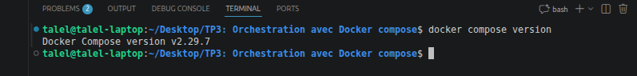
Partie 2 - Orchestration avec Docker Compose
Creation et demarrage des conteneurs
Arborescence attendue:
- sources/app/db-config.php
- sources/app/index.php
- sources/app/validation.php
- sources/db/articles.sql
- sources/db/Dockerfile
- docker-compose.yml
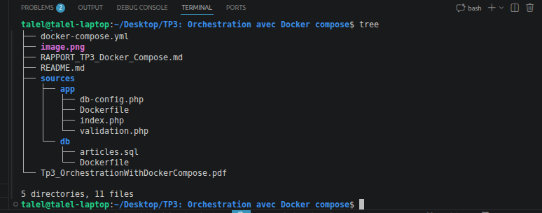
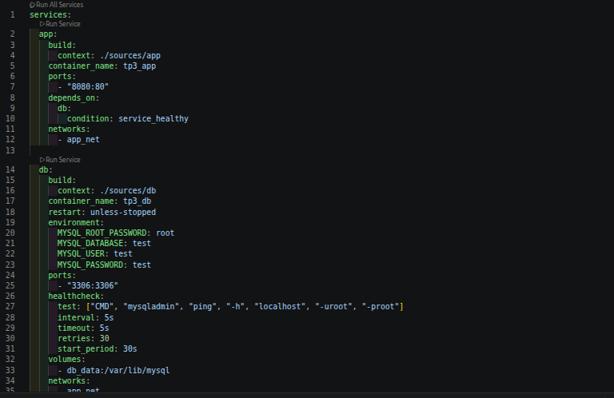
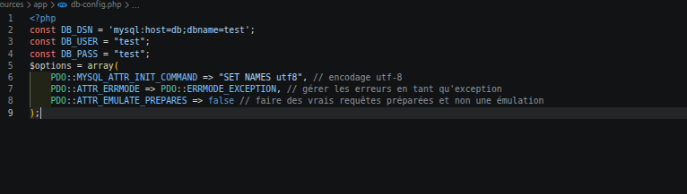
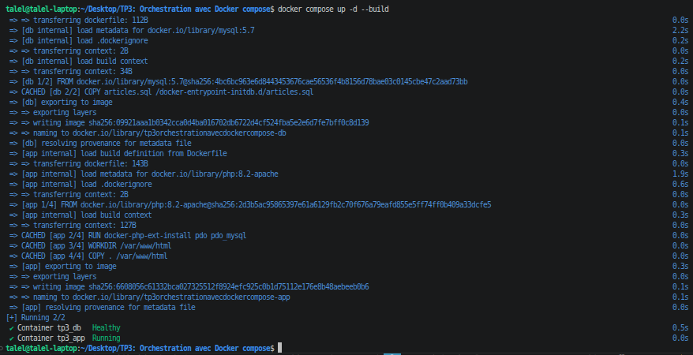
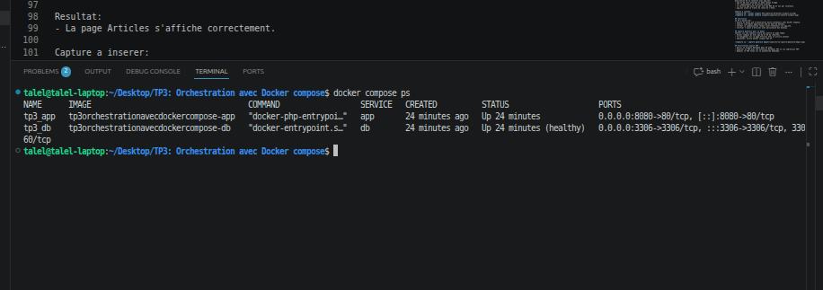
Test de la page web
URL testee: http://localhost:8080
Resultat: la page Articles s'affiche correctement.
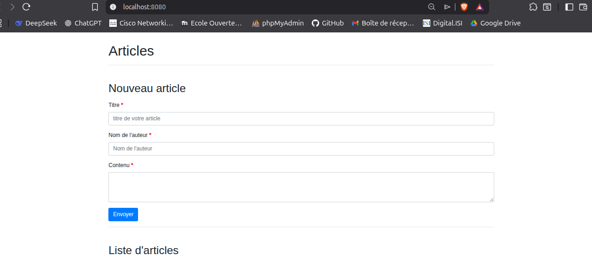
Ajout d'un article
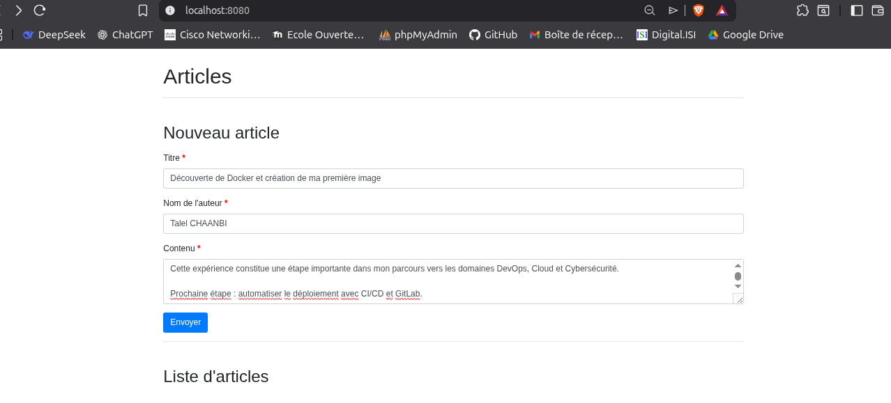
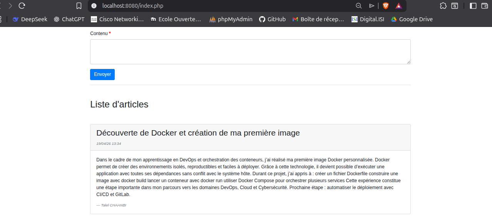
Adresses IP et reseau app_net
docker inspect tp3_app --format '{{range .NetworkSettings.Networks}}{{.IPAddress}}{{end}}'
docker inspect tp3_db --format '{{range .NetworkSettings.Networks}}{{.IPAddress}}{{end}}'
docker network inspect tp3orchestrationavecdockercompose_app_net
- IP conteneur app: 172.18.0.3
- IP conteneur db: 172.18.0.2
- Reseau app_net: bridge, 172.18.0.0/16, gateway 172.18.0.1
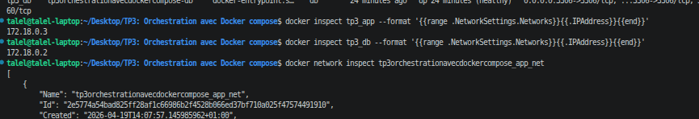
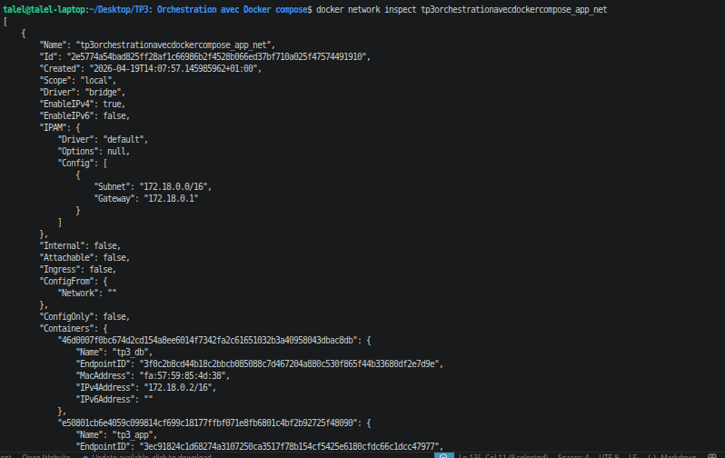
Conclusion
Ce TP a permis de mettre en place une orchestration multi-conteneurs avec Docker Compose, de separer l'application web et la base de donnees, de valider la communication via app_net, et de verifier l'ajout d'articles avec persistance des donnees.